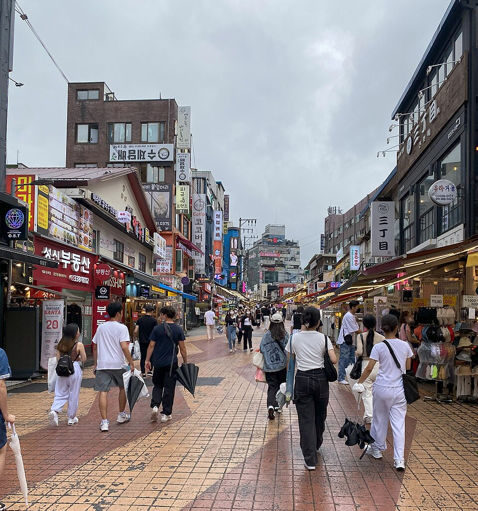

首爾影片地圖：韓國旅遊影片中的美食與景點
整理近期首爾街頭美食與韓屋村影片中出現的景點：富村肉膾、明洞夜市、弘大、北村韓屋村與Cafe Onion，附上簡要的行程建議。
從影片看首爾
首爾是韓國的首都，皇宮與傳統市場和漢江及夜景並存。美食種類也很豐富：烤五花肉（samgyeopsal）、烤大腸（gopchang）、鷺梁津的海鮮拉麵，以及廣藏市場的綠豆煎餅（bindaetteok）和生牛肉拌料（yukhoe）。本指南彙整了三支影片中出現的地點：《首爾街頭美食終極巡禮（廣藏市場）》、《2026首爾街頭美食之旅（含所有價格）》，以及《韓服、韓屋村、廣藏市場與南山塔Vlog》。
吃什麼、看什麼
富村肉膾（Buchon Yukhoe）
供應韓式生牛肉拌（yukhoe）與生牛肉拌飯的餐廳，獲得米其林必比登推薦。生牛肉拌是與廣藏市場密切相關的代表料理，以市場為主題的街頭美食影片能讓你感受到當地氛圍。如果對生牛肉不太習慣，可以先試試拌飯，牛肉與白飯拌在一起，是比較容易入口的選擇。
明洞夜市

適合傍晚品嚐街頭小吃的地方。與街頭美食影片一樣，最好的吃法是每樣都嚐一點，而不是只吃一種就飽。
弘大

充滿年輕活力、以街頭美食聞名的社區。適合邊走邊吃，自然地融入街頭美食行程。
北村韓屋村

由傳統韓屋組成的社區，適合慢慢散步。如同韓服與韓屋村Vlog所示，許多遊客會穿著韓服在這裡漫步。這些房子至今仍有人居住，探訪時請放低音量。
Cafe Onion
走了一整天路之後很適合歇腳的咖啡館。可以進來喝杯咖啡，在散步之間休息一下。
行程安排
一個簡單的順序：白天步行北村韓屋村，接著到Cafe Onion休息，之後感受廣藏市場的氛圍，並在富村肉膾享用生牛肉拌或生牛肉拌飯。入夜後可以在明洞夜市吃點小吃，或另外安排一個晚上逛弘大。街頭美食是在多個攤位各吃少量，因此出發前不要吃太飽。出門前請先確認營業日與營業時間。
影片中出現的餐廳·景點
- 富村肉膾（Buchon Yukhoe） (부촌육회) 韓式生牛肉拌（yukhoe）、生牛肉拌飯（米其林必比登推薦） Naver 地圖 Google 地圖
- 明洞夜市 (명동 야시장) 街頭小吃 Naver 地圖 Google 地圖
- 弘大 (홍대) 街頭美食 Naver 地圖 Google 地圖
- 北村韓屋村 (북촌한옥마을) 傳統韓屋村散步 Naver 地圖 Google 地圖
- Cafe Onion (카페 어니언) 咖啡館 Naver 地圖 Google 地圖
位置與營業時間可能變動，請出發前在地圖上確認。